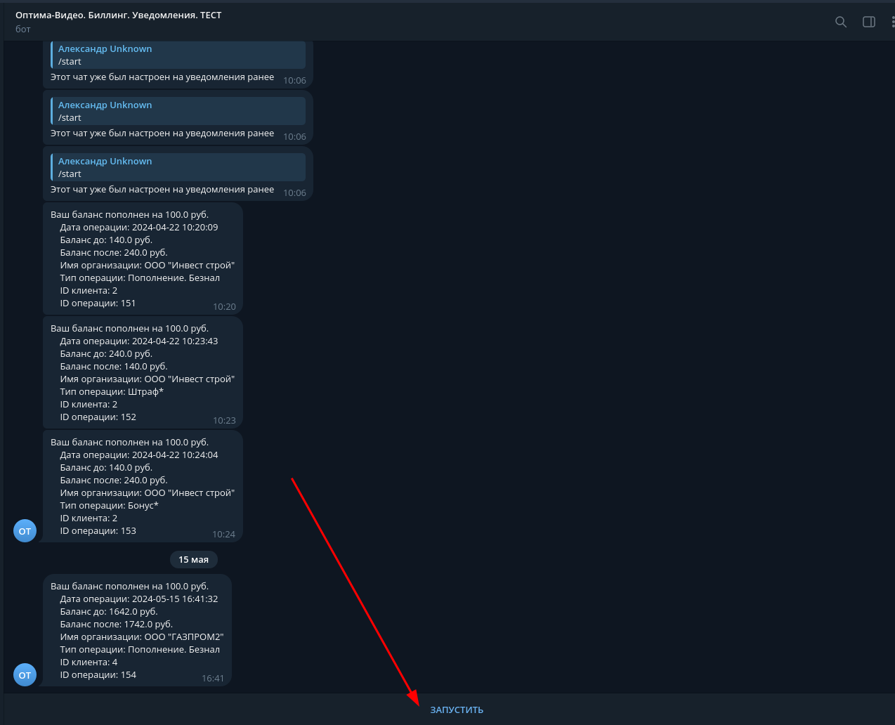
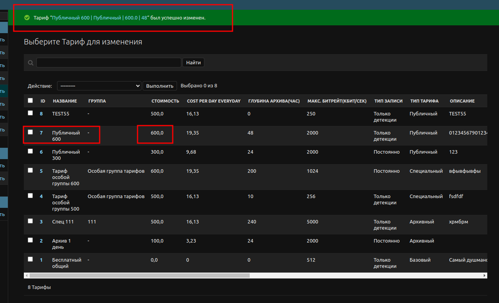
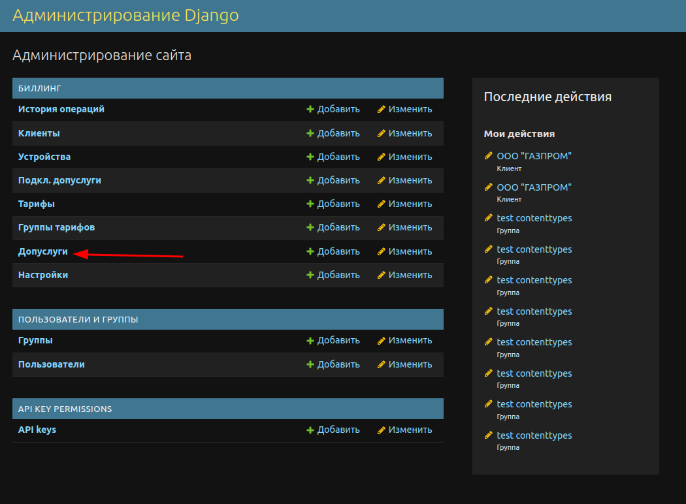

Панель администратора
Описания полей
Описания всех полей объектов системы можно посмотреть во внутринней документации, которая интегрирована непосредственно в админ-панель.
Перейдите по ссылке «Документация», находящейся в правом верхнем углу:
Перейдите в раздел «Модели»
Выбирите интересующую вас модель
4. Убедитесь что это именно тот тип объектов, который вы искали, посмотрев на описание страницы, которое обычно соответствует пути до объектов этого типа в главном меню либо не соответствует, в случае если это скрытый/системный тип объекта не предназначенный для администратора системы и не отображающийся в левом меню.
Биллинг
Клиенты
Этот раздел содержит информацию о клиентах биллинга. Подробное описание всех полей этого объекта доступно в панели администратора по пути:
Главная › Документация › Модели › billing.Client
Изменение баланса
Рассмотрим конкретный сценарий. К Вам в офис зашел клиент, занёс наличные и попросил внести их на свой счёт. Оператор заходит в админ-панель биллинга, затем кликает на пункт «Клиенты» в левом меню (см.скрин)
Перед оператором появится список клиентов.
Запросите у Клиента название организации/номер телефона/почту или какие-нибудь другие параметры из множества для идентификации. Воспользуйтесь блоком фильтров справа или поиском сверху для того чтобы найти необходимого клиента. В нашем примере мы вобьём номер телефона в строку поиска и найдём необходимого клиента:
Проставьте галочку рядом с нужным клиентом, затем из выпадающего списка действий выберите «изменить баланс» и нажмите кнопку «выполнить»
Далее вы провалитесь на страницу с формой. Заполните необходимые поля следуя их описаниям и нажмите кнопку «сохранить».
После этого баланс будет изменён, клиенту поступит оповещение в телеграм, если он его привязывал к системе.
Привязка к telegram
При создании клиента, в поле bot_verify_link, у клиента формируется уникальная ссылка, перейдя по которой он сможет привязать телеграм к системе биллинга, чтобы получать уведомления.
После успешной привязки у клиента появится id телеграм-чата в специальном поле.
Отчёт по объёму потребленных услуг
Пошаговая инструкция представлена на скриншоте:
Создание актов
Аналогично инструкции на скриншоте выше, за исключением шага №5. В данном случае там нужно будет выбрать действие «Создать акты». Далее вы попадёте на промежуточную страницу создания актов, где уже будут подставлен автоматически рекомендованый период за который нужно сделать акт (с первого числа предыдущего месяца по последние число предыдущего месяца). При необходимости можно изменить эти значения. Далее нужно нажать кнопку «сохранить», после чего в разделе «акты» появятся созданные акты, а клиентам отправятся копии этих актов в телеграм.
История операций
В этот раздел автоматически записываются операции, связанные с изменением балансов клиентов или блокировкой тарифов/допуслуг. Подробное описание всех полей этого объекта доступно в панели администратора по пути:
Главная › Документация › Модели › billing.PaymentHistory
Экспорт истории операций
Рассмотрим конкретный кейс. Стоит задача - предоставить клиенту отчёт по всем изменениям его баланса за последний месяц. Клиент хочет знать когда именно и за что именно списывались деньги с его счёта в течении месяца, а так же когда именно и сколько денег поступало на его баланс.
Переходим в Главная › Биллинг › История операций
Находим конкретного клиента
Указываем диапазон дат
Выбираем все найденные объекты
Выбираем действие «экспортировать выбранные объекты в Excel»
Жмём кнопку «выполнить». Начнётся скачивание Excel файла с отчётом.
Примечание
Внимание! Редактирование сохранённых операций может повлиять на данные в актах, отчётах по потреблённым услугам, а также на корректность оповещений клиентов.»
Устройства
Этот раздел хранит в себе информацию о подключенных устройствах(как правело камерах видеонаблюдения) Здесь хранится информация о том оплачен или нет тарифный план на устройстве. Подробное описание всех полей этого объекта доступно в панели администратора по пути:
Главная › Документация › Модели › billing.Device
Допуслуги
Этот раздел хранит в себе информацию о списке допуслуг, доступных для подключения на устройства. Подробное описание всех полей этого объекта доступно в панели администратора по пути:
Главная › Документация › Модели › billing.Option
Подкл. допуслуги
Этот раздел хранит в себе информацию о подключенных дополнительных услугах на конкретные устройства, а так же оплачены ли допуслуги на конкретном устройстве на текущий момент. Подробное описание всех полей этого объекта доступно в панели администратора по пути:
Главная › Документация › Модели › billing.DeviceOption
Тарифы
Этот раздел хранит в себе информацию о списке тарифов, доступных для подключения на устройства. Подробное описание всех полей этого объекта доступно в панели администратора по пути:
Главная › Документация › Модели › billing.Tariff
Группы Тарифов
Этот раздел хранит в себе информацию о списке групп тарифов. Каждый тариф может быть причислен к одной из групп тарифов. Каждая группа тарифов может быть причислена к одному или нескольким клиентам. Это делается для того чтобы клиент в своём личном кабинете мог видеть только тарифы из своей группы + бесплатный тариф. Подробное описание всех полей этого объекта доступно в панели администратора по пути:
Главная › Документация › Модели › billing.GroupOfTariff
Настройки
Этот раздел хранит в себе информацию о настройках системы. Подробное описание всех полей этого объекта доступно в панели администратора по пути:
Главная › Документация › Модели › billing.Settings
Акты
В этом разделе хранятся акты об оказании услуг, автоматически генерирующиеся 1 числа каждого месяца и рассылающиеся клиентам, в карточке которых указана такая необходимость. Наши реквизиты берутся из раздела Реквизиты, а клиентские – из карточки клиента. В случае необходимости можно вручную сгенерировать акты, нажав на кнопку «Добавить акт» в правом верхнем углу, а также в разделе «Клиенты». Вручную сгенерированные акты будут автоматически отправлены клиентам. Описание всех полей этого объекта доступно в панели администратора по пути:
Главная › Документация › Модели › billing.Act
Наши реквизиты
В этом разделе хранятся реквизиты организации, которая оказывает услуги. Используется для подстановки в шаблон при создании актов. Описание всех полей этого объекта доступно в панели администратора по пути:
Главная › Документация › Модели › billing.Requisites
Создание объектов
Рассмотрим процесс создания объектов на примере объекта «Допуслуга». Все остальные объекты создаются аналогичным образом.
В левом меню выберем интересующий нас тип объекта и кликнем по нему.
После чего мы попадём на страницу списка созданных допуслуг. На ней, в правом верхнем углу, нажимаем кнопку «добавить допуслуга»
Далее появится форма. Заполняем поля и жмём кнопку «сохранить» Поля выделенные более жирным шрифтом являются обязательными для заполнения. Поля выделенные менее жирным шрифтом являются необязательными для заполнения.
Далее система попросит подтвердить создание нового объекта, нажав кнопку «Да, я уверен» либо вернуться на предыдущий шаг, нажав «No, continue to edit». Нажимаем «Да, я уверен».
Готово! Вы будете возвращены на страницу списка объектов, появится оповещение об успешном добавлении объекта и вы сможете увидеть новый объект в списке.
Редактирование объектов
Рассмотрим процесс редактирования объектов на примере объекта «Тариф». Все остальные объекты редактируются аналогичным образом.
В левом меню выберем интересующий нас тип объекта и кликнем по нему.
После чего мы попадём на страницу списка объектов. Кликните по значению первой колонки интересующего Вас объекта. Обычно это ID.
Далее появится форма. Изменим стоимость тарифа и название и нажмем кнопку «сохранить»
Далее система попросит подтвердить изменение объекта, нажав кнопку «Да, я уверен» либо вернуться на предыдущий шаг, нажав «No, continue to edit». Нажимаем «Да, я уверен».
Готово! Вы будете возвращены на страницу списка объектов, появится оповещение об успешном изменении объекта и вы сможете увидеть обновленный объект в списке.
Удаление объектов
Рассмотрим процесс удаления объектов на примере объекта «Допуслуга». Все остальные объекты удаляются аналогичным образом.
В левом меню выберем интересующий нас тип объекта и кликнем по нему.
Проставьте галочки рядом с объектами, которые требуется удалить, а так же в разделе «действия» выберите «Удалить выбранные допуслуги» и нажмите кнопку «выполнить»
Далее система попросит подтвердить удаление объекта, нажав кнопку «Да, я уверен» либо вернуться на предыдущий шаг, нажав «Нет, вернуться к выбору». Так же будет предоставлен список объектов, связанных с удаляемым объектом, которые тоже удалятся при выполнении этой операции Нажимаем «Да, я уверен».
Готово! Вы будете возвращены на страницу списка объектов, появится оповещение об успешном удалении объекта.
Пользователи и Группы
В этом разделе вы можете создавать группы пользователей/пользователей с определенным набором прав доступа. Каждое право доступа из выпадающего списка представлено в формате <ИМЯ DJANGO ПРИЛОЖЕНИЯ > | <ИМЯ МОДЕЛИ ЭТОГО DJANGO-ПРИЛОЖЕНИЯ(ТИП ОБЪЕКТА)> | <ПРАВО ДОСТУПА> <ИМЯ МОДЕЛИ>
DJANGO-ПРИЛОЖЕНИЕ- это «Биллинг», «Пользователи и группы» и «API-KEY-PERMISSIONS» в левом меню админки, а МОДЕЛЬ(ТИП ОБЪЕКТА) - это, например «Клиенты» или «История операций» в приложении «Биллинг» в том же левом меню.
Вы можете причислить пользователя к одному или нескольким группам пользователей, после чего к нему применятся все права из этих групп. Вы так же можете назначить индивидуально пользователю права дополнительно.
- Право доступа бывает одного из 4-ёх видов:
- can_add - разрешить пользователю создавать объекты этого типаcan_change - разрешить пользователю изменять объекты этого типаcan_delete - разрешить пользователю удалять объекты этого типаcan_view - разрешить пользователю просматривать объекты этого типа
Примечание
если вы выдаёте право can_change для объекта, то независимо от того, назначено ли пользователю право can_view, пользователь всё-равно сможет просматривать этот объект, включая историю изменения этого объекта.
Вы можете назначить сразу все 4 вида доступа на тот или иной тип объекта или не назначить ни один из них.
Описание прав доступа
Пользователи и группы | группа | Can {вид доступа} group Права доступа к группам пользователей
Пользователи и группы | пользователь | Can {вид доступа} user Права доступа к пользователям
Биллинг | Клиент | Can {вид доступа} Клиент Права доступа к клиентам. Стоит отметить, что доступ к просмотру истории изменения объекта «Клиент»/просомтру и восстановлению состояния из истории изменения объекта «клиент», регулируется выдачей прав Биллинг | Клиент | Can view/change Клиент соответственно. Т.е если пользователю выдано право Биллинг | Клиент | Can view Клиент, то ему будет доступен так же и просмотр истории изменений этих объектов. Если пользователю выдано право Биллинг | Клиент | Can change Клиент, то ему будет доступен так же и просмотр истории изменений этих объектов + восстановление этих объектов из истории.
Биллинг | Устройство | Can {вид доступа} Девайс Права доступа к устройствам
Биллинг | Подкл. допуслугу | Can {вид доступа} Опция девайса Права доступа к подключенным допуслугам
Биллинг | Группа тарифов | Can {вид доступа} Группа тарифов Права доступа к подключенным группам тарифов
Биллинг | Допуслуга | Can {вид доступа} Опция Права доступа к списку допуслуг
Биллинг | История операции | Can {вид доступа} Движение баланса Права доступа к истории операций
Биллинг | Настройки | Can {вид доступа} Настройки Права доступа к настройкам
Примечание
В системе может быть один и только один объект «Настройки». Он создаётся автоматически при развертке системы. Его удаление может привести к сбою системы. Так что имеет смысл выдавать право только на редактирование/просмотр или не выдавать вовсе никаких доступов к этому типу объектов.
Биллинг | Тариф | Can {вид доступа} Тариф Права доступа к тарифам
API Key Permissions | API key | Can {вид доступа} API key Права доступа к API keys (API-ключи)
Так же существует несколько дополнительных разрешений, которые не вписываются в viev/change/delete/add доступы:
Биллинг | custom permissons | Может изменять баланс - разрешить пользователю доступ к действию «изменить баланс» на странице списка клиентов(дополнительно требует доступа Биллинг | Тариф | Can view/change Клиент)
Биллинг | custom permissons | Может получать отчёт по потребленным услугам - разрешить пользователю доступ к действию «Получить отчёт по объему потребленных услуг в Excel» на странице списка клиентов(дополнительно требует доступа Биллинг | Тариф | Can view/change Клиент)
Биллинг | custom permissons | Может выгружать историю операций в Excel - разрешить пользователю доступ к действию «Экспортировать выбранные объекты в Excel» на странице истории операций(дополнительно требует доступа Биллинг | История операции | Can viev/change Движение баланса)
Примечание
Все остальные разрешения, которые вы можете наблюдать в выпадающем списке при назначении прав, не имеют значения в текущей конфигурации, рекомендуется не назначать.
Пользователи
Карточка пользователя
Форма, открывающаяся при редактировании пользователя, содержит несколько разделов:
Персональная информация - указываются персональные реквизиты.
Права доступа - выдаются необходимые права доступа
Важные даты - поля заполняются системой автоматически. Обычно их не имеет смысла редактировать.
Пояснения по правам пользователя в биллинге
Работа в административной панели биллинга требует ответственного подхода, поскольку в ней можно умышленно либо по непониманию совершить действия, нарушающие выстроенную систему тарифов и балансов клиентов. Доступ к административной панели должен быть только у ответственных и обученных сотрудников. Для упрощения работы в системе заранее настроены группы пользователей с различными уровнями прав:
Администраторы – максимальный уровень прав, исключающий критические. Включает настройку тарифной политики и редактирование истории операций. Этот уровень прав должен быть максимум у нескольких человек, а может быть только у одного. Настоятельно рекомендуется даже старшему администратору работать под этими правами, а не использовать статус суперпользователя.
Менеджеры – уровень прав, позволяющий осуществлять работу по полноценному сопровождению клиентов: управление балансами, изменение клиентских тарифов и услуг, просмотр истории операций и прочее. Если какому-то сотруднику необходим расширенный уровень прав, то правильнее добавить отдельные необходимые права конкретному сотруднику, находящемуся в группе «Менеджеры».
Кассиры – единственная разрешенные функция таких сотрудников – изменение баланса клиента и просмотр информации о клиентах.
API KEY PERMISSIONS -> API Keys
Этот раздел служит для управления ключами от HTTP API системы. При выпуске нового ключа, он полностью отобразится только 1 раз во всплывающем уведомлении, затем его невозможно будет посмотреть в админ-панели. Так что рекомендуется созранить его куда-либо отдельно сразу после создания.
Описания полей
Name - имя ключа, чтобы было понятно для кого он и зачем.
Revorked - проставьте галочку чтобы отозвать ключ в любой момент, сделав его невалидным.
Eperies - дата до которой ключ будет действителен, если не указать ничего, то он будет действовать вечно, пока вы его не отзовете в ручную или не удалите.
Prefix - малая часть ключа, которая будет видна в административной панели после создания.